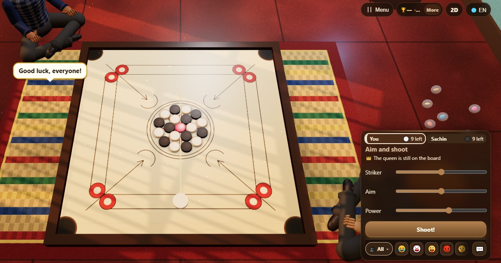

Carrom (Carrom)
- 👥 2 oyuncu
- Kutu oyunları
- 🆓
Türkçe rehber
Vurucuyu fiske ile at, taşlarını deliğe sok ve vezire sahip çık.
English name: Carrom

Nasıl oynanır
- 1. koltuk beyaz taşları, 2. koltuk siyah taşları oynar. Her renkten dokuz taş, bir de ortada kırmızı kraliçe vardır.
- Vurucuyu Vurucu kaydırıcısıyla taban çizgisine yerleştir, Nişan ile yönü ve Güç ile kuvveti seç, sonra vur.
- Kendi taşlarından birini sokarsan yeniden vurursun. Sokamazsan sıra geçer.
- Kraliçe örtülmelidir. Onu soktuktan sonra aynı atışta ya da bir sonrakinde kendi taşından birini sok, yoksa kraliçe ortaya geri döner.
- Vurucu cebe düşerse faul olur: soktuğun taşlardan biri ortaya geri döner ve sıran biter.
- Birinin son taşının cepte kalabilmesi için kraliçenin önce gitmiş olması gerekir.
Puanlama
Kazanan, öteki oyuncunun tahtada kalan her taşı için 1 puan, kraliçe kendisindeyse 3 puan daha alır.
Kim kazanır
Kraliçe örtülmüş şekilde tüm taşlarını ilk sokan kazanır. 80 atış geçerse taşı daha az kalan kazanır.
Sık sorulan sorular
Bunlar resmî carrom kuralları mı?
Telefonda iyi çalışması için faulleri ve puanlaması sadeleştirilmiş, alışılmış oyunu izler. Kurallarımız yukarıda eksiksiz anlatılıyor.
Dört kişi oynayabilir mi?
Henüz değil. ChitPlay carrom iki oyuncu içindir.
Bahis var mı?
Hayır. Puanların değeri yoktur, hiçbir şey satın alınamaz ya da kazanılamaz.
Nasıl oynanır
- Misafir olarak: Üyelik ve giriş yok. Bir ad seç ve hemen oyna.
- Bilgisayara karşı: Kimse yoksa bilgisayar oyuncuları boş yerleri doldurur. Kolay, normal veya zor.
- Online: Dünyanın her yerinden oyuncularla açık bir masaya otur.
- Yakındaki arkadaşlarla: Oyunu bir telefonda başlat, kodu veya QR kodu paylaş. Arkadaşların kendi telefonlarından katılır.
- Tek telefonda: Telefonu sırayla elden ele verin: bütün aile için tek cihaz yeter.
Diğer diller
- हिन्दी: कैरम
- Hinglish: Carrom
- Español: Carrom
- Português: Carrom
- Français: Carrom
- Deutsch: Carrom
- Bahasa Indonesia: Karambol
- Italiano: Carrom
- 日本語: キャロム
- 한국어: 캐롬
- 中文: 克朗棋
- Русский: Карром
- اردو: کیرم
- नेपाली: क्यारम
- বাংলা: ক্যারম
- English: Carrom · Tüm kurallar (İngilizce)
Oyun fikirleri
Tüm oyunlar


ChitPlay'de gerçek para, bahis veya ödül yoktur. Puanların değeri yoktur.